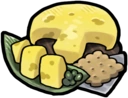

Cheese Mushroom Biscuit
A crispy biscuit snack topped with a slice of cheese shroom
Ingredients:
- 1 cup all-purpose flour
- 2 teaspoons baking powder
- 1/2 teaspoon salt
- 1/4 cup cold butter
- 3/4 cup grated cheddar cheese
- 1/2 cup sliced mushrooms
 Cheese Shroom
Cheese Shroom
Cheese Mushroom Salisbury Steak
A juicy Salisbury steak. Cut it in half to experience a paradise of sauce and cheese.
Ingredients:
- take 1 pound ground beef
- 1/2 cup finely chopped onion
- 1/2 cup finely chopped mushrooms
- 1/2 cup grated cheddar cheese
- 1 egg
- 1/2 cup breadcrumbs
- 1/2 teaspoon salt
- 1/4 teaspoon black pepper
 Ham Cheese Shroom
Ham Cheese Shroom